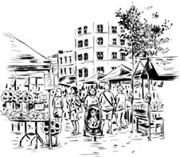
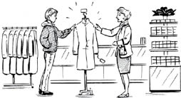
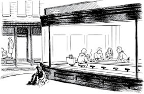

Bölüm 2
METALARIN MÜBADELESİ
Şimdi sihirli bir alana (gelişmiş kapitalizmdeki piyasa diyarına) girmemiz gerekiyor. Burası burjuva iktisadıyla siyasetinin en mutlu olduğu alandır çünkü bu mübadele alanında olup bitenler, günümüz kapitalizmini olabilecek en iyi aydınlıkta sunacak biçimde görünür. Burası kapitalist toplumun birçok idealiyle düşüncesinin boy attığı verimli bir arazidir.
Metalar piyasaya kendi başlarına gidemez ve kendi kendilerini mübadele edemez. Dolayısıyla, bunların ellerinden tutan kimseleri, yani meta sahiplerini de tanımamız gerekir. Metalar şeylerdir ve bundan ötürü insanlar karşısında direnme güçleri yoktur. … Bu şeyleri meta olarak birbirlerinin karşısına çıkarmak için, bunları ellerinin altında bulunduran kimselerin birbirlerinin karşısında iradeleri bu şeylerde tezahür eden kişiler olarak yer almaları gerekir; böylece, biri ancak diğerinin iradesiyle, yani her biri ancak her iki tarafın katıldığı bir irade beyanıyla, kendi metasını elinden çıkararak yabancı metanın sahipliğini elde eder. Bu nedenle, bu kimselerin karşılıklı olarak birbirlerini özel meta sahipleri olarak kabul etmeleri zorunludur. Sözleşme sistemi hukuk sistemi içinde gelişmiş olsun olmasın, bir sözleşme biçiminde olan bu hukuki ilişki, kendisinde iktisadi ilişkinin yansıdığı bir irade ilişkisidir.
Marx, Kapital, s. 93
Marx burada biraz hiciv yapmaktadır çünkü daha sonra metaların, sahipleri denilen kimselere karşı “direnme güçleri” olduğunu göreceğiz. Ama tüketici kimliğimiz, mübadele alanında kapitalizm tarafından korunup kollanmaktadır. Tüketici olarak bizi güçlü hissettiren duygu, piyasaya girmenin günlük gerçekliğinde kök salmıştır. Meta sahiplerinin buluşup karşılıklı rıza ile alışveriş yaptıkları bu âlem, özgür bir ortammış gibi görünür. Bu bir hukuk diyarıdır, kişisel irademizi dile getirdiğimiz bir alandır. Başka bir deyişle, mübadele sadece iktisatla ilgili değildir, nasıl davrandığımızla, nasıl hissettiğimizle, hangi varsayımları yaptığımızla, bir bütün olarak hangi toplumu “normal” saydığımızla da ilgilidir.
Mübadele diyarında nelerin olup bittiğine daha yakından bakmak için iki oyuncuya ihtiyacımız vardır: Biri Alıcı, öbürü Satıcı.
Alıcımız bir palto almak üzere piyasayı dolaşmaya çıkar. Yaklaşan kışa hazırlanmaktadır.
Alıcımızın cebinde, beğendiği paltoyla değiştirebileceği bir meta vardır. Bu meta paradır. Marx bize bunun sadece bir meta olduğunu söyler –para biçiminde bir meta.
Metaların ortak bir ölçüye sahip olmaları, paranın eseri değildir. Tersi geçerlidir. Bütün metalar değer olarak nesnelleşmiş insan emeği olduklarından ve dolayısıyla da ortak bir ölçüyle ölçülebilir olduklarından, kendi değerlerini hep birlikte aynı özel metayla ölçülebilir ve böylece bu metayı kendi ortak değer ölçülerine, yani paraya dönüştürülebilirler.
Marx, Kapital, s. 102

Öyleyse Alıcımızın cebindeki şey, değerlerin ortak ölçüsüdür. Alıcımız piyasanın nasıl işlediği konusunda küçük kızlığından bu yana deneyim kazandığından bilir ki cebinde bu özel meta yoksa ne “iradesi” vardır ne de piyasada sözü geçer. Ancak bir kuruşu bile olmayan kimseler piyasadan tamamen dışlanır. Cebimizde birkaç kuruş varsa piyasaya, eski püskü giysilerle bile, bir amaç duygusuna bürünmüş olarak girebiliriz.
Bu amacı kendimizinmiş gibi hissederiz. Bir anlamda öyledir de. Onca şey arasında bir palto almaya ihtiyacı olduğuna karar veren Alıcımızdır. Piyasaya girmesi için ona kimse emir vermemiştir. Piyasada da hiçbir Satıcı, Alıcımızın parasından vazgeçmesini emredemez. Ama Alıcımız ihtiyaçlarını karşılamak için yine de piyasaya girer. Alıcının piyasadan alamayacağı tek şey piyasa dışında kalmaktır.
Alıcımız piyasada başka Alıcılarla karşılaşır, bunların kimi ondan daha zengindir, kimi daha yoksul. Ama hepsi satın almalarını aynı şeyi, yani parayı kullanarak yapar. Bazı kimseler için bir mübadele aracı, öbürleri için başka bir mübadele aracı yoktur. Bazen iktisadi güçleri çok farklı insanlar aynı dükkânlardan alışveriş yapabilir. Ama mübadelenin kendisinde aynı satın alma eylemini görürüz.
Daha sonra Kapital’e dönüşecek notlarını içeren Grundrisse’de Marx şöyle der:
İkisi de ekmek satın alan bir işçi ile bir milyoner, bu işi yaparken, sadece basit birer alıcı olarak görünür, tıpkı bakkalın onların gözünde sadece bir satıcı olması gibi.
Marx, Grundrisse
Alıcımız böylesi toplumsal farklılıkların açıkça farkında değildir ama yine de para harcamak istemediği mağazaların önünden, genellikle sattıkları paltoların bedelinden daha fazlasını ödeyebilecek durumda olduğu için hızla geçer. Alıcımız harcamak istediği paradan daha pahalı paltolar satan mağazaların vitrinleri önünde biraz oyalanır. Bu paltolar onun satın alma gücünün tamamen dışında kalmamaktadır ama Alıcımızın bugün de yarın da başka ihtiyaçları olacaktır, her ihtiyaç da piyasada para harcamayı gerektirir. Dolayısıyla Alıcımız her alışverişini yaparken, başka metaların değerini ölçen o özel metadan elinde ne kadar olduğuna bakarak ölçülü davranmak zorundadır.
Sonunda Alıcımız beğendiği bir palto bulup 100 dolarını onunla değiş-tokuş eder. Tam da o sihirli anda değer biçim değiştirir. Alıcımızın cebindeki para, almak istediği kullanım değerini taşıyan paltoya, dükkândaki palto da Alıcımızın cebinden çıkan paraya dönüşür.
Metanın paraya dönüşmesi aynı zamanda paranın metaya dönüşmesidir.
Marx, Kapital, s.115
Satıcı, Alıcımıza “iyi günler” diler ama ikisi de bilir ki ilişkileri tamamen bu mübadele eylemiyle sınırlıdır.
Kişiler burada birbirleri için ancak metaların temsilcileri ve dolayısıyla meta sahipleri olarak mevcuttur.
Marx, Kapital, s. 93-94
Alıcımız dükkândan çıkınca para dilenen evsiz barksız birinin önünden geçer. Alışverişte biraz yorulduğundan bir gazete alıp kısa bir mola için bir kafeye girer. Orada gazetede, son on yılda eşitsizliğin arttığını belirten yeni bir haber okur. Ama finans sayfasında da birçok büyük perakendeci şirketin kârının arttığı yazılıdır.

Şimdi ne olup bittiğine bakarsak, Alıcımızın metaların mübadelesinde “iradesini” nasıl ifade ettiğini görürüz. Ayrıca şunu da görürüz: Alıcımız piyasadaki sözünün geçerliliğinin bazı sınırlarının farkında olduğu anda bile (pahalı mağazaların vitrinlerine bakarken olduğu gibi) bir paltoya bu kadar para harcama kararından kendi akılcı hesaplamalarının sorumlu olduğunun farkındadır.
Belki bir kredi kartı kullanıp sahip olduğundan daha fazlasını harcamaya karar verseydi, hiçbir satıcı ona “İyi düşündünüz mü?” diye sormazdı. Alıcı, iyi ya da kötü, kendi dünyasının efendisi gibi görünmektedir.
Mübadele eyleminde birey… eylemin tek, baskın (belirleyici) öznesi olarak kendi yansımasını bulur. Böylelikle de bireyin tam anlamıyla özgür olduğu varsayılır: Gönüllü işlem yapma, iki tarafta da zorlama yok, kendini egemen ve birincil görme.
Marx, Grundrisse
Sonuçta Alıcımız, kışın çok işine yarayacak bir paltoyu 100 dolarla değiş-tokuş etmiştir. Şimdi, Alıcımız “parasının karşılığını” almış gibi hisseder mi kendini? Bu ilginç bir deyimdir. Ne anlama gelir? Belli bir miktar parayı bir meta ile değiştirdiğimizde, metanın içerdiği kadar bir değer almışız izlenimini verir.
Fiyat, metada nesnelleşmiş emeğin para ile ifade edilen adıdır. Bundan dolayı, bir metanın, ismi bu metanın fiyatı olan bir para miktarının eşdeğeri olduğunu söylemek totolojidir.
Marx, Kapital, s. 108
İşte bu biraz garip. Alıcımız eşdeğeri, bir eşdeğerle değiştirmiş görünüyor. Tam da Marx’ın dediği gibi bir totoloji. Alıcımız 100 dolarlık insan emeği içeren bir paltoya 100 $ vermiştir. Eğer piyasa böyle işliyorsa o zaman Alıcımız niye alışveriş etmek istemediği mağazalara, alışveriş etmek isteyip de pahalı bulduğu mağazalara girmemiş, niye sokakta bir dilenciye rastlamış, niye artan eşitsizlik haberinin yanı sıra perakendeci şirketlerin artan kârlarından söz eden bir haber okumuştur?
Eşdeğer şeylerin el değiştirmesi, gerçekliğin bu yönlerini açıklayacak gibi görünmüyor. Ama Marx durumun çoğu zaman böyle olduğu konusunda son derece kararlıdır.
Bütün süreç … bir ürün mübadelesinden başka bir şey değildir. Aynı mübadele değerine sahip metaların ya da metalarla paranın, yani eş değerli şeylerin birbirleriyle değiştirilmesi durumunda, kimsenin, dolaşıma soktuğundan daha fazla değer çekmediği açıktır.
Marx, Kapital, s. 163
Ama belki de bunların bazılarını kendi küçük senaryomuzda, çoğu zaman eşdeğerlerin mübadele edilmediği olgusuyla açıklayabiliriz.
Bunun ortaya çıkabileceği birkaç durumdan söz edilebilir.
Sözgelimi talep arzdan çok yüksekse fiyatlar, metaların içerdiği değerlerin üstüne çıkar.
Yahut bir piyasaya birkaç büyük şirket hâkim olabilir, rekabetin yokluğunda fiyatlar yine metaların içerdiği değerleri aşabilir.
Ya da bazı kimseler bir ürüne, metaya iliştirilmiş marka nedeniyle tam olarak “değeri”nden daha fazla para ödemeye ikna edilebilir.
Bunların hepsi doğrudur ama bunlar senaryomuzda gözlediğimiz hiçbir servet farklılığını açıklamaz. Dilencimiz, fazla ödeme yaptığı bir dizi çok yanlış satın alma kararı nedeniyle dilenci olmamıştır.
Gazetede sözü edilen toplumsal eşitsizliğin bu yüzden arttığına da inanamayız.
Bakkaldaki milyonerin, hep “paranın karşılığını veren” çok rekabetçi piyasalarda alışveriş ettiği için milyoner olduğuna da bizi kimse inandıramaz. İşlerin belirtildiği gibi yürüdüğü bir toplum, (şişirilmiş fiyatlı) markalara bağlı alımları açıklanamaz ve aslında olanaksız kılardı.
Üstelik arzın çoğu zaman talebi aştığını da biliyoruz. Bazen firmaların fiyat kırma rekabetine giriştiği de malumumuz. Ayrıca malların fiyatlarını şişirmek için markaya başvurulmayan piyasalar olduğu da bilgimiz dâhilinde.
Şimdiye kadar mübadele eyleminde gördüklerimiz, piyasa yüzeyinin altında saklı eşitsizliğin, toplumsal katmanlaşmanın işaretlerini açıklamıyor. Asıl önemlisi değerin nasıl yaratıldığını da açıklamıyor. Bazı kimselerin nasıl olup da hep piyasaya verdiklerinden daha çok (artık) değer edindiklerini ise hiç açıklamıyor.
Diyelim ki Alıcımız 100 $ eden bir paltoya 110 $ ödemiş olsun. Bu durumda Satıcı, Alıcının cebinden eskisine göre 10 $ fazlasını almış olur. Bu da Alıcının başka şeyleree 10 $ daha az harcaması anlamına gelir, bu da hem onun hem başka satıcıların 10 $ kaybı demektir. Marx, yüksek fiyatla satış konusunda şunu söyler:
Dolaşımdaki değerde zerre büyüme olmamış, bunun … bölünüşü değişmiştir. … Dolaşımda bulunan değerler toplamının, bunun dağılımında meydana gelen herhangi bir değişiklikle artırılamayacağı açıktır.
Marx, Kapital, s.166
Alıcımız elbette sadece alıcı olmayabilir. Piyasa toplumunda Alıcılık ve Satıcılık, insanların farklı zamanlarda bulunduğu konumlardır. Belki Alıcımız aynı zamanda, 90 $ eden bir metayı 100 $ ile mübadele etmiş bir Satıcıdır. Eğer öyleyse Satıcı (yani Alıcımız) başka bir Alıcının cebinden, piyasaya sunduğundan 10 $ fazla almıştır. Bunun da anlamı, yine, bu ikinci Alıcının başka şeylere 10 $ daha az harcamak zorunda kalmasıdır. Bu ikinci Alıcı hep böyle davranmaya devam ederse sonu sokakta dilenmek olur. Ama bu davranış açıklanabilir gibi değildir. Alıcı ve Satıcı olarak bizlerin akılcı ve hesaplı davranmaya yönlendirildiğini görmüştük. Ara sıra yanlış yapabiliriz ama sürekli olarak verdiğimizden daha az değeri geri almak, hem bizim çıkarlarımıza hem de piyasadaki davranışlar hakkındaki piyasa açıklamasına aykırıdır.
Demek oluyor ki, nasıl evirilip çevrilirse çevrilsin, sözünü ettiğimiz olgu aynı kalır: eş değerli şeyler birbirleriyle değiştirildiğinde, bir artık değer doğmaz, eş değerli olmayan şeyler birbirleriyle değiştirildiğinde de, gene, bir artık değer doğmuş olmaz.
Marx, Kapital, s. 166
Demek ki bir muammayla karşı karşıyayız. Piyasa mekanizmaları, varlık nedenleri onu mübadele etmek olsa bile, temel şeyin, yani değerin kökenini (üretimi) açıklayamaz.
Piyasa kategorilerinin açıklama gücünün bu sınırlılığı, sadece piyasa kategorilerini ve Marx’ın kapitalist toplumun ya da burjuva toplumunun görünümü ya da “görüngüsel” biçimi diye andığı şeyi sorgulamayan kategorileri ifade etmekle yetinen tüm siyasal, iktisadi ve kültürel alanları da etkiler.
Bir bütün olarak bugünkü burjuva toplumunda fiyatlar, bunların dolaşımı vb. ön kabuller yüzeydeki süreç olarak görünür ama bunun altında, derinlerde, bu görünürdeki bireysel eşitlik ve özgürlüğün ortadan kaybolduğu tamamen farklı süreçler işler.
Marx, Grundrisse
Buraya kadar gördüklerimizden açıkça anlaşıldığı gibi Marx’ın Kapital’i sadece iktisatla ilgili bir kitap değildir. Doğurduğu sonuçlar da sadece iktisadi olmaz. Kapitalizmde insanlığın bütün kültürü ve bilinç alanı, kabaca “piyasa tarzı düşünme” dediğimiz şey tarafından iyice daraltılmıştır. Piyasa kavramlarının açıklama gücündeki sınırlılığın, yaşamımızın her alanında piyasanın yaygın varlığıyla uyumlu biçimde, gerçekliği anlamakta bütünüyle yetersiz düşünme biçimlerini teşvik etmesi olasıdır. Gerçekliğin “derinliklerinde” yüzeydekinden çok farklı bir şey olup durmaktadır.
Nesnelerin iktisadi yüzüne dönersek, sözgelimi piyasa kavramları olan arz ve talep, alıcılar ve satıcılar, fiyat ve para, vb. iktisadi bunalımları açıklayamamaktadır.
Her satış bir alış ve her alış bir satıştır diye, meta dolaşımının satışla alış arasında zorunlu bir dengeyi gerektirdiği dogmasından daha saçma bir şey olamaz.
Marx, Kapital, s. 119
Alışla satışın zorunlu olarak neden uyum içinde olmayabileceğini henüz bilecek konumda değiliz ama Marx, aynı kavramların hem bir bağlantıya hem de ayrılığa işaret ettiğini söyler:
Bir metanın tam başkalaşımının birbirini tamamlayan iki evresi arasındaki zaman süresi çok uzayacak, satışla alış arasındaki ayrılma çok açık ve belli bir hale gelecek olursa, bunların iç birliği, kendisini zorla, bir bunalım yaratarak ortaya koyar.
Marx, Kapital, s. 119
Bu piyasa ekonomisinin, belli bir toplumu oluşturan başka insanlarla bir tür ilişki kurma yolu anlamına geldiğini de gördük. Bu aşamada, böyle bir toplumda insanlar arasındaki ilişki konusunda çok tuhaf bir çelişkiden söz edebiliriz:
Bunları bir araya getiren ve aralarında ilişki kuran biricik güç, onların bencillikleri, özel kazançları ve kişisel çıkarlarıdır. Ve böylece, herkes kendi çıkarını kolladığından ve kimse başkaları için bir şey yapmadığından, şeylerin önceden kurulmuş uyumunun sonucu olarak ya da her şeye gücü yeten bir Tanrı inayetinin himayesi altında, herkes, yalnızca, onlara karşılıklı avantaj sağlayan, herkes için yararlı, ortak çıkarlara uygun işler yapar.
Marx, Kapital, s. 178
Tıpkı piyasa kavramlarının dengeye yönelme varsayımları gibi, piyasa toplumu da herkesin kendi çıkarı peşinde koşmasıyla toplumsal birlik ve uyumun kurulabileceğini varsayar. Marx’ın bu düşünceyle alay etmesine şaşmamak gerek.
Ama gelin biz temel iktisadi çelişkiye dönelim: Piyasa kavramları mübadele edilmek üzere tasarlanan tek şeyin, değerin kökenini açıklayamamaktadır.
Bu gizemi çözmek için mübadelenin
her şeyin açıkta ve göz önünde cereyan ettiği
bu “gürültülü alanından” çıkıp
kapısında “işi olmayan giremez” yazılı olan, üretimin yapıldığı gizli işyerine girelim. Burada, sadece sermayenin nasıl ürettiğini değil, aynı zamanda kendisinin de sermaye olarak nasıl üretildiğini göreceğiz. Kâr yapmanın sırrı da sonunda açığa çıkacak.
Marx, Kapital, s. 177